Motto: Beverly Hills- that’s where I want to be.
I’m going to keep this as short as possible. There is a LOT to cover if I want to cover everything, so I should keep rambling to a minimum if I can. Rambling. Ram Bling. Weird. Minimum. Mini Mum. Strange. I can. iCan. Okay now you’re just messing with me.
I already wrote up my Top 5. It’s a photo edition Top 5. It’s also a Top 15. I couldn’t whittle down my trip into just 5 pictures. Even those 15 pictures don’t begin to portray what a fun-packed adventure I had. I’ll probably sneak a couple more here in the body of the column, just to be sneaky.
Side note: My Pandora is rocking pretty hard right now. My station named The Greatest Station Ever is pretty much just that.
So. I went to California. The story, if you hadn’t heard, begins with an invite from a good friend of the family, Sally Hanson. She was a bridesmaid at my sister’s wedding in July. During this period she transitioned from being “friend of my family” to “a friend of mine”. After the wedding, I confessed to Sally that I hadn’t seen much of country and I needed to travel more. She told me she would gladly show me around California if I bought the tickets. I thought she was kidding. She wasn’t.
Let me tell you two things to start this whole thing off:
- I had an amazing time in California.
- I had the world’s greatest friend working hard to make sure that was true.
Now allow me to set the tone for the story:
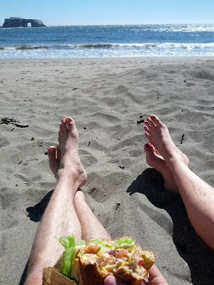
Beautiful friends having a beautiful lunch on a beautiful beach on a beautiful day (Thesis: California is beautiful)
Rather than go through a long narrative of everything that happened during the trip, I’m going to take a barebones note structure approach (thanks education!):
Wednesday I flew from Kansas City to Phoenix, and from Phoenix to Los Angeles. I got the seat with extra leg room again flying out of KCI. That’s twice in a row. Sally picked me up in her Prius. That car is awesome. Driving in LA looked horrible. We went to Malibu beach. I walked in the ocean for the first time in at least 5 years. We ate the best biscuits in the world. I’m fairly confident. I saw Sally’s neighborhood. It is cute. Where I would live if I lived in LA. Thursday We hiked to the Hollywood Sign. Pictures were taken from behind. Pesky fog put a slight damper on an otherwise amazing view from the top. Life goal #1 accomplished thanks to Sally. We met my cousin Sharon for Korean lunch. It honestly wasn’t bad! Sharon took us to Family Guy. I saw the office and what a few people do there. It was a fascinating look into a world of complexities I never even thought about. I wish I could see Sharon more often. Sally’s friend and former coworker Auggie took us on a behind-the-scenes tour of CBS. I got a second look into the world that makes television go. An empty lot vs a fully built set. The difference is astonishing. Auggie was very funny and couldn’t have been a better host. Sally, her friend Huston, and I eat at a French place near her abode. Huston was very nice and I got to know him far less than I would have cared to. Sally and I went to a variety show at The Groundlings. I enjoyed it. I think Sally enjoyed it more. Friday I was on the phone for a good portion of the morning for a (potential, probable) work-related matter. Sally took me paddleboarding. I am good at balancing on a paddleboard, the thing most people have trouble with. I am terrible at making a paddleboard go, the thing most people can do easily. Paddleboarding absolutely destroyed my back. I spent the better portion of the evening taking it easy and taking anti-inflammitories. Sally’s friend Ben invited her over to listen to an album on her record player. That album turned out to be soon-to-be-released “Night Visions” by Imagine Dragons. I listened to to it with her and Ben and Dan, who just so happened to be two members of the band. No big deal. Ben and Dan both made me laugh a lot. They, too, were good people. I’ve since heard a song of theirs during the preview for “The Perks of Being a Wallflower”. Saturday Saturday was spent mostly in the car. Sally drove us something like 10 hours up to northern California. The drive consisted of the ocean on our left, the mountains on our right. I got carsick cause I’m a huge wuss, noncolorfully speaking. We talked a whoooole bunch. Luckily she is a great conversationalist. She introduced me to “This American Life”. I am now a big fan. Italian dinner. The waiters were in formal attire. Very nice. Sunday Sally took me to meet her friend Greg in San Fransisco. Greg is a director, currently working on a project for the Discovery channel. We three got a spot of tea. Soon Greg and Sally will be working together on a full-length feature film. I am fully excited for both of them. Greg tells great stories and is was very entertaining. I met Sally’s friend Audrey and her husband Kyle. We went shopping for a dinner party. We had said dinner party. There I met Sally’s mother and sister. All those involved made me feel right at home. The dinner was delicious and the party was one of my favorite nights, entirely thanks to the people. Monday I. WENT. TO. GOOGLE. I had lunch at Google with Sally and a designer named Michael. He introduced us to a few of his fellow Googlers and told Sally and I what to see on campus. I’m glad Sally is a great people person. I was too stoked/overwhelmed/excited to do or say anything of actual value. We went to the Google Store. I got $140 worth of Google swag. I call it swag cause that’s what they called it. I paid for it using my Android phone and Google Wallet (naturally) We also watched the movie Premium Rush. Google outshined the movie easily. GOOGLE! THE GOOGLE! Life goal #2 accomplished thanks to Sally Tuesday I ate breakfast with three Hansons. They are great people. I was glad I got to see them again. Can’t wait for next time. We went to a redwood forest. The trees there reminded me of myself. Tall and extremely good looking. I saw a couple small towns where I could easily see myself settling down with a family. I saw Sally’s high school. It was strangely deserted for being in session. We ate and hung out on the beaches of northern California for the better part of the day. It was a perfect cap on the perfect trip, to be cliched. Wednesday #2 I swallowed sadness and flew home. Don’t get me wrong. I love the people here. I just don’t love the +20 degree temperature difference and the lack of a certain very charismatic and enthusiastic friend. The whole experience opened my eyes to not only the great ways of California, but the greatness of travel and new life experiences. As they say, I was blind, but now I see.
Tyler, I want you to really listen to me… My eyes are open. That Fight Club reference didn’t match the picture in mood or tone… but if I get an opportunity to reference Fight Club you should bet I’ll do it.
Reoccurring themes from the trip: Sally’s friends and family are wonderful, treated me very nicely, and were generally fun to be around. Sally impressed me in some new way. I don’t think I’ve ever owed anyone a bigger thank you in my entire life. I don’t know how I could possibly begin to repay her. I will start by just saying it…
Thank you, Sally.
Top 15: (my) pictures from this trip (in chronological order)
- I arrived at the airport to leave an hour and half early due to eagerness. The terminal was empty.
- The first place Sally took me was a beach in Malibu. It yielded one of my favorite pictures from the whole trip.
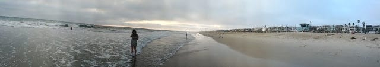
- We hiked the Hollywood sign… ended up behind it somehow. The fog makes this picture not do justice for how beautiful Los Angeles is. Also worth noting: LA is more to the right.
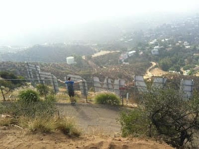
- We met with my cousin Sharon for Korean lunch. The stuff in those bowls was mostly edible food!
- Sharon is a character designer at Family Guy (not pictured) also, sometimes American Dad (pictured!). Side note: The bottle I’m holding is carbonated water. Apparently that’s a thing there. I don’t get it.
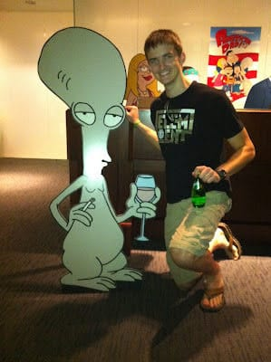
- Sally used to work at CBS. She pulled a few strings and I a one-man tour of their lot. I saw, among other awesome things, the Big Wheel!
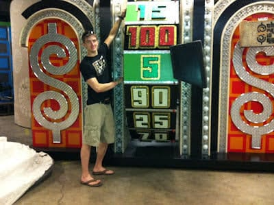
- This is the air of confidence of a man who thinks he can probably handle paddleboarding on the Pacfic.
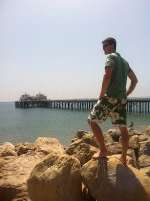
- This is the stubbornly defeated pose of a man who can make a paddleboard turn, but can’t make it go forward.
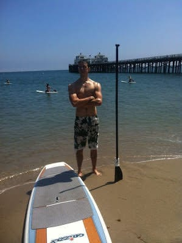
- San Fransisco has a hill or two.
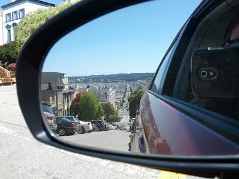
- This picture was taken just to prove Sally is a hippie hippie hippie.
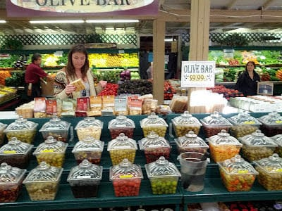
- I got some swag at Google. I WENT TO GOOGLE. AAAAAA!!!!!!!
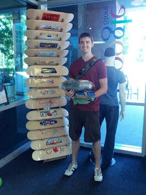
- 1 big goof and 3 wonderful wonderful people. Breakfast with the Hansons.
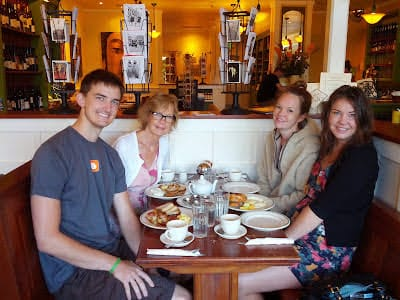
- Amongst the redwoods I never felt more at home.
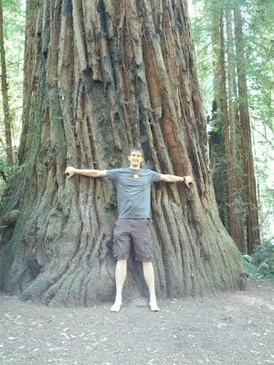
- Northern California beaches are definitely my cup of tea. I had a cup of tea in San Fransisco, by the way. Not shown: the sequence of shots showing that I fell over backwards doing this handstand.
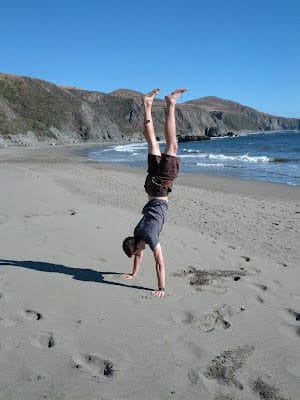
- The (now official) Sally and Aaron signature pose. Faces not representative of the overall nature of the trip.
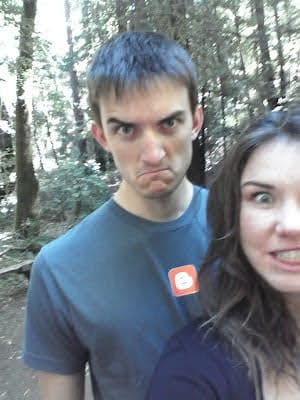
Quotes:
“Whoa!” “DUDE!” and/or “That is amazing!’ Me, constantly
“Thanks for reaffirming a commonly held stereotype” Ira Glass, quoted to the best of my memory from this edition of my new favorite way to pass the time in a car, This American Life
“Lily, how about take off your humble pants” Sally Hanson
“Sometimes you make funny jokes” Sally Hanson’s accidentally cutting compliment. Quote of the trip.